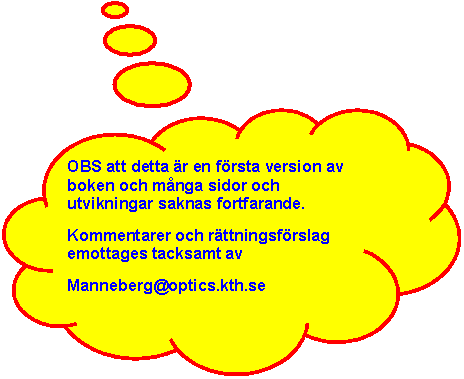

Välkommen till vårt kursmateriel om Optik, Laser och Optronik
Boken är upplagd som en filstruktur som kan läsas med godtycklig web-browser
Netscape eller Internet Explorer senare än 3.x räcker eftersom vi valt att inte inkludera någon Java
Boken är skriven i nivåer: Nivå 1 motsvara en föreläsningskurs på ca 6 timmar, nivå 2 ca 30 timmar och nivå 3 är fördjupning.
Boken är indelad i kapitel (5st) som vardera har ett antal sidor (som i sin tur blir flera papperssidor vardera om man skriver ut)
Varje sida har länk till nästa sida, nästa kapitel och
innehållsförteckningen längs ner.Länkar i löpande text går till endera av
 Förklaring på termer som dyker upp och som förklarats tidigare
Förklaring på termer som dyker upp och som förklarats tidigare
 Svar på uppgifter eller tankenötter
Svar på uppgifter eller tankenötter
 Utvikningar till nivå 3
Utvikningar till nivå 3
Länkar som är gråade finns ej i denna första version av texten
Några ord om inställningar i Browser
Om man gör bredden ca 800 pixel (dvs 3/4 av skärmbredd om man har ställt in 1024x768) hamnar bilder och så bäst.
Om bilder blir hackiga eller otydliga blir de i allmännhet bättre om man gör view image (hö musknapp över bilden, välj view image)
